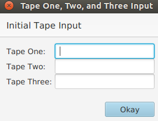

The general language structure of our TM is a 7-element tuple. The format of the tuple is READ_TAPE, INITIAL_STATE, READ_TOKEN, WRITE_TOKEN, DIRECTION(S), WRITE_TAPE, END_STATE;. The following is an example of a basic instruction tuple:
t1, A, 0, 1, <, t1, B;
For a better understanding, here is the meaning of each symbol of the initial example.
READ_TAPE t1 - Read from Tape 1
INITIAL_STATE A - Start in State A
READ_TOKEN 0 - If you read a 0
WRITE_TOKEN 1 - Write a 1
DIRECTION < - Move left
WRITE_TAPE t1 - Write to Tape 1
END_STATE B - Transition to State B
Comments are also a useful tool when writing a program, so the Turing Machine interpreter recognizes those as well. Starting a line with # tells the TM interpreter to ignore the rest of the line.
# I am a comment
Each comma-separated category of the tuple has its own set of instructions. In this section, we will give a breakdown of syntactically correct symbols for each category.
The read and write tape share the same syntax.
Symbols: t1, t2, t3
The initial state can be any string of alpha-numeric characters.
Symbols: Any combination of a-z, A-Z, 0-9
The read and write tokens accepted depend on the program. Some programs allow
alpha-numeric characters while others may only accept numbers.
Symbols: a-z, A-Z, 0-9, _, *
The '*' is a wildcard symbol that means "no matter what you read" in the read context,
and "write nothing" in the write context. The '_' symbol is used for reading and writing blanks.
The directional tokens are used to move the read-write head the specified direction.
To stay and not move the read-write head, use the '*' symbol.
Symbols: <, >, *
Note: Multiple direction symbols can be used if there are multiple tapes.
For example, <*, would mean move the read-write head of Tape 1 left, but don't move
the read-write head of Tape 2.
The following example will read the comma-separated input line, insert the values into their respective tapes, and sum the two tapes and store the result in tape 3. The input: line is optional. If it isn't there, a popup box will appear asking for the inputs of each tape.
BinaryAddition.tm
# This is a Binary Addition program
# It accepts two binary numbers as inputs for tape 1 and tape 2,
# sums them together onto tape 3
input: 100000101, 1110;
# Start State for Tape 1 (start1) - get to the rightmost bit of tape1
t1, start, _, _, <, t1, start2;
t1, start, *, *, >, t1, start;
# Start State for Tape 2 (start2) - get to the rightmost bit of tape2
t2, start2, _, _, *<, t2, A;
t2, start2, *, *, *>, t2, start2;
# STATE A
t1, A, 0, 0, <, t1, B;
t1, A, 1, 1, <, t1, C;
t1, A, _, _, *, t1, endOfFirst;
# STATE B
t2, B, 0, 0, *<<, t3, A;
t2, B, 1, 1, *<<, t3, A;
t2, B, _, 0, **<, t3, endOfSecond;
# STATE C
t2, C, 0, 1, *<<, t3, A;
t2, C, 1, 0, *<<, t3, Carry;
t2, C, _, 1, *<<, t3, endOfSecond;
# STATE Carry
t1, Carry, 0, 0, <, t1, Carry0;
t1, Carry, 1, 1, <, t1, Carry1;
t1, Carry, _, _, *, t1, endOfFirstCarry;
# STATE Carry0
t2, Carry0, 0, 1, *<<, t3, A;
t2, Carry0, 1, 0, *<<, t3, Carry;
t2, Carry0, _, 1, **<, t3, endOfSecond;
# STATE Carry1
t2, Carry1, 0, 0, *<<, t3, Carry;
t2, Carry1, 1, 1, *<<, t3, Carry;
t2, Carry1, _, 0, **<, t3, endOfSecondCarry;
# STATE endOfFirstCarry
t2, endOfFirstCarry, 0, 1, *<<, t3, endOfFirst;
t2, endOfFirstCarry, 1, 0, *<<, t3, endOfFirstCarry;
t2, endOfFirstCarry, _, 1, **<, t3, acceptHalt;
# STATE endOfSecondCarry
t1, endOfSecondCarry, 0, 1, <*<, t3, endOfSecond;
t1, endOfSecondCarry, 1, 0, <*<, t3, acceptHalt;
# STATE endOfFirst
t2, endOfFirst, 0, 0, *<<, t3, endOfFirst;
t2, endOfFirst, 1, 1, *<<, t3, endOfFirst;
t2, endOfFirst, _, _, ***, t2, acceptHalt;
# STATE endOfSecond
t1, endOfSecond, 0, 0, <*<, t3, endOfSecond;
t1, endOfSecond, 1, 1, <*<, t3, endOfSecond;
t1, endOfSecond, _, _, *, t1, acceptHalt;
If the input file does not contain an input line, the following will pop-up upon load:
